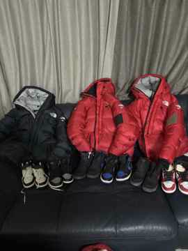
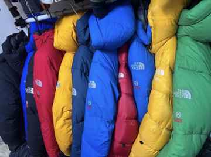

COLLECTION · MARKET TRACE · HISTORY
VINTAGE
ARCHIVE
20-card visual integration test. Market records, private collection photographs and external historical references are intentionally mixed to test a real archive layout on desktop and mobile.
20 VISUAL CARDSBUNJANG 9PRIVATE ARCHIVE 3HISTORY / RESEARCH 8



PRIVATE ARCHIVE · COLLECTION
TNF Red / Black Collection Study
PRIVATE ARCHIVE · COLLECTION
TNF Yellow / Red Color Comparison

PRIVATE ARCHIVE · COLLECTION
TNF Color Lineup — Hanger View
TEST BUILD · Source fields remain explicit. User-provided collection photographs are labeled PRIVATE ARCHIVE; external editorial material links back to the original source. Items without a verified image URL are intentionally excluded from this visual build rather than filled with guessed imagery.